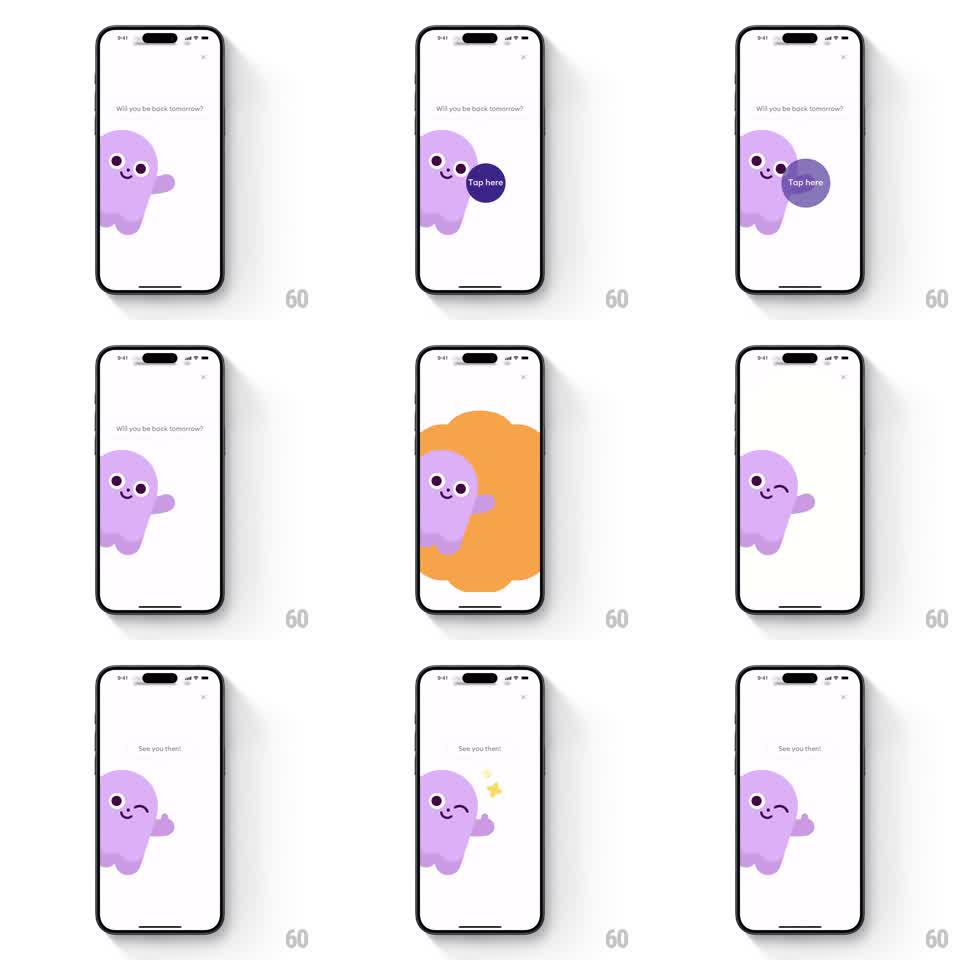

Media
Frame-by-frame

Rebuild this animation 1:1: Ahead's app-exit nudge - a purple blob mascot peeks in under "Will you be back tomorrow?", a "Tap here" bubble appears, and on tap the screen flashes through an orange color burst while the mascot winks, gives a thumbs up, and the copy switches to "See you then!".

Rebuild this animation 1:1: Ahead's app-exit nudge - a purple blob mascot peeks in under "Will you be back tomorrow?", a "Tap here" bubble appears, and on tap the screen flashes through an orange color burst while the mascot winks, gives a thumbs up, and the copy switches to "See you then!".
## Integration
Integration: stack-agnostic spec - springs given as stiffness/damping, timed motions as duration + curve; map every value to your framework and animation library of choice.
## Scene
Minimal off-white screen: small X top-right, centered copy ("Will you be back tomorrow?" -> "See you then!"), and a round purple blob mascot with eyes and a tiny smile peeking from the lower-left edge.
## Motion spec
Pattern: reactive mascot nudge with color burst.
- The mascot slides in from the left edge (spring ~280/22, ~500ms, slight overshoot) and idles with a gentle bob (±4px, 2.4s loop).
- A dark "Tap here" bubble pops in next to its head (scale 0.5 -> 1, spring ~380/20, ~250ms).
- On tap: an orange blob shape blooms from behind the mascot to fill the whole screen (scale 0 -> full-bleed, 500ms ease-out), then recedes back (400ms) revealing the off-white again.
- During the burst the mascot winks (one eye squeezes, 200ms), then raises a thumb (arm rotates up 60deg, spring ~350/20, ~300ms) as a small yellow star pops near its head (scale + fade, 250ms).
- Copy crossfades to "See you then!" (250ms) as the burst recedes.
## Calibration
- The burst is one fluid orange shape with irregular edges - not a flat color fill.
- Mascot reactions sequence strictly: wink first, thumbs-up as the burst recedes, star last.
## Reduced motion
Burst becomes a quick background tint swap; mascot changes pose without spring motion.
## Don't miss
- The mascot peeks from the screen edge - half of it stays off-canvas at rest.
- "Tap here" is part of the mascot cluster and disappears the moment the tap lands.